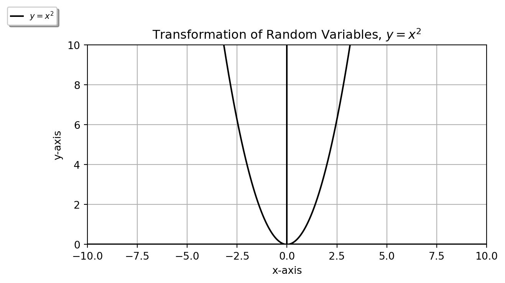

확률 변수 2개 이상에 대한 확률 분포를 joint probability distribution (결합확률분포)라고 하는데 두 확률 변수 \(X\) 와 \(Y\) 의 관계에 대해서 규명해야 할 때가 있다. 예를 들어, X 와 Y의 높은 상관계수라든지 또는 비선형적인 관계가 관찰될 때 그 관계가 수리적으로 모델링이 가능하고 한 확률 변수의 분포에 대한 정보를 알고있다면 미지의 다른 확률 변수의 분포가 추정가능해진다. 이 때 두 변수에 대한 관계 정도가 높으면 높을수록 추정이 쉬워진다.
이번 블로그에서는 주어진 확률 변수 \(X\) 에 대해서 \(X\) 의 pmf (probability mass function) 또는 pdf (probability density function) \(f_x(x)\) 를 알고있을 때 확률 변수에 \(X\) 에 적절한 함수의 변환을 적용해 확률 변수 \(Y\) 를 \(Y=u(X)\) 라는 관계식이 정의 가능할 때 \(Y\) 의 pmf 또는 pdf를 구하는 방법에 집중한다. 후에 MGF (Momment Generating Function) 학습에 응용될 수 있는 개념으로 잘 정리할 필요가 있다.
1.2 Trnasformation of Discrete Random Variables
Theorem 1 Discrete random variable \(X\) 의 probability distribution이 \(f_X(x)\) 이고 \(X\) 와 \(Y\) 사이에는 \(Y=u(X)\) 라는 one-to-one relation이 성립될 때 \(y=u(x)\) 를 유일한 \(x\) 를 \(y\) 에 대한 함수인 \(x=w(y)\) 로 표현 가능하다면 \(Y\) 의 probability distribution는 \[
f_Y(y)=f_X(w(y))
\] 이다.
1.2.1 Example
In the case of a One-to-One relation
동전을 독립적으로 2번 던질 때, 확률 변수 \(X\) 가 앞면이 나오는 수라고 정의했을 때, 확률 분포 아래 표 (a)와 같다. \(Y=2X+1\) 라는 관계가 성립할 때 \(Y\) 의 분포는 아래 표 (b)와 같다.
Table 1: Exmaple: Transformation of Discrete Random Variable (One to One)
(a) Probability Distribution of \(X\)
\(X\)
0
1
2
\(P_X(X=x)\)
\(\frac{1}{4}\)
\(\frac{2}{4}\)
\(\frac{1}{4}\)
(b) Probability Distribution of \(Y=2X+1\)
\(Y=2X+1\)
1
3
5
\(P_Y(Y=y)\)
\(\frac{1}{4}\)
\(\frac{2}{4}\)
\(\frac{1}{4}\)
In the case of not a One-to-One relation
동전을 독립적으로 2번 던질 때, 확률 변수 \(X\) 가 앞면이 나오는 수의 합이라고 정의 했을때, \(X\) 의 확률 분포는 아래 표 (a) 와 같다. 이 때 \(Y=mod(X,2)\) 라는 관계가 성립할 때 \(Y\) 의 분포는 아래 표 (b) 같다.
Table 2: Exmaple: Transformation of Discrete Random Variable (Not One to One)
(a) Probability Distribution of \(X\)
\(X\)
0
1
2
\(P_X(X=x)\)
\(\frac{1}{4}\)
\(\frac{2}{4}\)
\(\frac{1}{4}\)
(b) Probability Distribution of \(Y=mod(x,2)\)
\(Y=mod(x,2)\)
0
1
\(P_Y(Y=y)\)
\(\frac{2}{4}\)
\(\frac{2}{4}\)
위의 예시와 같이 두 확률 변수가 one to one 관계일 때는 확률분포가 그대로 유지되어서 쉽게 변환된 확률 변수의 분포가 추정가능하지만 one to one 관계가 아닐 경우 확률 분포가 바뀌게 된다.
another example (In the case of not a One-to-One relation)
기하분포 (Geometric Distribution)란 동일한 베르누이 (Bernoulli) 분포의 시행을 독립적으로 반복할 때 첫 성공까지의 시행 횟수를 확률변수 \(X\) 로 하는 분포이다. 즉, \(x-1\) 번째까지 베르누이 시행이 실패하고 \(x\) 번째 시행에서 성공할 확률 분포를 말한다.
Notation은 \(X \sim Geometric(p)\) 또는 \(X \sim Geo(p)\) 라고 표현하고, \(p\) 는 독립 시행에서 성공할 확률이다. (참고: \(text{E}(X)=\frac{1}{p}\), \(\text{Var}(X)=\frac{1-p}{p^2}\))
\(X \sim Geometric(\frac{4}{5})\) 일 때 \(X\) 의 확률분포 \(f(x)=\frac{4}{5}(\frac{1}{5})^{(x-1)}\), \(x=1,2,3 ...\) 가 기하분포일 때 \(Y=X^2\) 의 확률분포는
1.3 Trnasformation of Joint Discrete Random Variables
Theorem 2 Two discrete random variables \(X_1\) 과 \(X_2\) 의 joint probability distribution이 \(f(x_1,x_2)\) 이고 \((x_1,x_2)\) 와 \((y_1,y_2)\) 가 one-to-one relation이 성립되어 \(y_1=u_1(x_1,x_2)\) 와 \(y_2=u_2(x_1,x_2)\) 를 유일한 \(x_1=w_1(y_1,y_2)\) 와 \(x_2=w_2(y_1,y_2)\) 의 함수로 표현 가능하다면 새로운 확률변수 \(\mathbf{Y}\), 즉, \(Y_1\) 과 \(Y_2\) 의 joint probability distribution는 \[
f_Y(y_1,y_2)=f_X(w_1(y_1,y_2),w_2(y_1,y_2))
\] 이다.
1.3.1 Example
exmaple 1
다항 분포(multinomial distribution)란 2개 이상의 독립적인 확률 변수 \(\mathbf{X}=X_1, X_2, ...\) 들에 대한 확률분포로, 여러 독립 시행에서 각 각의 값이 특정 횟수가 나타날 확률을 정의하고 독립 변수가 2개인 경우 다항 분포의 특별한 case로 이항 분포 (binomial distribution)가 된다.
\(X_1\) and \(X_2\) 가 다음과 같은 multinomial distribution을 따를 때 \[
f(x_1,x_2) = \binom{2}{x_1,x_2,2-x_1-x_2}\frac{1}{4}^{x_1}\frac{1}{3}^{x_2}\frac{5}{12}^{2-x_1-x_2} x_1=0,1,2, \space x_2=0,1,2, \space x_1+x_2\le 2
\]
\(X_1\) 과 \(X_2\) 의 결합확률분포가 다음과 같을 때 변환된 \(Y_1=X_1+X_2\) 와 \(Y_2=X_1X_2\) 의 결합확률 분포는?
Table 3: Exmaple: Transformation of Joint Discrete Random Variable (Not One to One)
(a) Probability Distribution of \(X\)
\((x_1,x_2)\)
(0, 0)
(0, 1)
(1, 0)
(1, 1)
\(f_X(x_1,x_2)\)
\(\frac{1}{4}\)
\(\frac{1}{4}\)
\(\frac{1}{4}\)
\(\frac{1}{4}\)
(b) Probability Distribution of \(Y\)
\((y_1,y_2)\)
(0, 0)
(1, 0)
(2, 1)
\(f_Y(y_1,y_2)\)
\(\frac{1}{4}\)
\(\frac{2}{4}\)
\(\frac{1}{4}\)
1.4 Trnasformation of Continuous Random Variables
Theorem 3 continuous random variable \(X\) 의 probability distribution이 \(f_X(x)\) 이고 \(X\) 와 \(Y\) 사이에는 \(Y=u(X)\) 라는 one-to-one relation이 성립될 때 \(y=u(x)\) 를 유일한 \(x\) 를 \(y\) 에 대한 함수인 \(x=w(y)\) 로 표현 가능할 때 Y의 확률 분포는 \[
f_Y(y)=f_X(w(y))|J|
\] 이다. (\(J=w'(y)\), called ‘Jacobian’)
1.4.1 Example
In the case of a One-to-One relation
지수분포(exponential distribution)는 연속 확률 분포 중 하나로, 사건이 서로 독립적일 때, 일정 시간동안 발생하는 사건의 횟수가 푸아송 분포를 따른다면, 다음 사건이 발생할 때까지의 대기 시간을 확률 변수 \(X \in [0, \infty)\) 로 하는 분포이다. (Source: Wiki).
참고: \[
\begin{aligned}
X&\sim Exp(\lambda) \\
\text E[X] &= \frac{1}{\lambda}\\
\text{Var}[X] &= \frac{1}{\lambda^2}\\
f(x;\lambda)&=
\begin{cases}
\lambda e^{-\lambda x} & x \ge 0\\
0 & x<0
\end{cases}\\
\end{aligned}
\]\(\lambda>0\) is the parameter of the distribution, called ‘rate parameter’.
Transformation of Linear Function. When two random variables \(X \sim \text{exp}(\lambda)\) and \(Y\) has the relation, \(Y=aX+b\)\((a\ne 0)\). When \(f_X(x)=\lambda e^{-\lambda x}\), \(f_Y(y)\) is
위의 정리를 유도를 하진 않았지만 증명을 해보면 사실, \(|J|\) 는 역함수의 미분의 계수인 것을 할 수 있다. 위의 예시를 By definition 으로 푼 것을 보면 \(y=u(x)\) 와 \(x=w(y)\) 의 관계인 것을 알 수 있고 \(|J|\) 에 해당되는 \(\frac{1}{a}\) 는 CDF \(F(Y)\) 의 derivative를 구하는 과정에서 발생하는 chain rule에 의해 생긴 것을 알 수 있다.
import numpy as npimport matplotlib.pyplot as pltx = np.linspace(-10, 20, 1000)y =2*x+1y2 = x/2+1fig, ax = plt.subplots()ax.axhline(y=0, color='k')ax.axvline(x=0, color='k')ax.grid(True, which='both')ax.plot(x,x,color='black',label=r'$y=x$', linestyle='dashed')ax.plot(x,2*x-2,color='black',label=r'$x=w(y) \rightarrow y=2x-2 $')ax.plot(x,y2,color='red',label=r'$y=u(x)=\frac{1}{2}x+1$')ax.set_aspect(1)ax.set_title(r"Example of Relation of X and Y, $y=u(x)$ vs $x=w(y)$")ax.set_xlabel("x-axis")ax.set_ylabel("y-axis")ax.set_xlim(-20, 40)plt.legend(shadow=True, loc=(-0.5, 1.1), handlelength=1.5, fontsize=8)plt.show()
\(P(Y\le y)=P(X\le \frac{y-b}{a})\) 이기 때문에 \(X\) 의 특정 구간의 확률과 대응되는 \(Y\) 의 구간의 확률이 같다고 했을 때 \(Y \le y\) 의 범위는 \(X\) 를 \(b\) 만큼 이동한 후 \(a\) 배한 \(x\) 좌표 이하 구간에 대응 된다 즉, \(X\le \frac{y-b}{a}\). 이 때, 두 구간에서의 확률 밀도가 같아야 하기 때문에 \(f_x(x)\) 가 \(f_Y(y)\) 의 \(\frac{1}{a}\) 배 인 것을 알 수 있다.
위의 그림에서 처럼, 두 확률 변수 \(X\) 와 \(Y\) 의 관계를 \(y = 2x+1\)\((a>1)\) 와 \(y = \frac{1}{2}x+1\)\((0 \le a\le 1)\) 로 두 가지의 예로 들면, 위의 그래프의 경우, \(y = 2x+1\)\((a>1)\) 일 때 \(0<X<10\) 는 \(1<Y<21\) 의 구간이 2배가 되는 것을 관찰 할 수 있다. 반대로, \(y = \frac{1}{2}x+1\)\((0 \le a\le 1)\) 일 때 \(0<X<10\) 는 \(1<Y<6\) 의 구간이 \(\frac{1}{2}\) 배가 된다. 이 때 각 예시의 경우에 \(X\) 와 \(Y\) 의 확률 값이 같기 때문에 (\(P(Y\le y)=P(X\le \frac{y-1}{2})\) 와 \(P(Y\le y)=P(X\le \frac{y-1}{\frac{1}{2}})\)). \(f_x(x)\) 가 \(f_Y(y)\) 의 각 각 \(2\) 배와 \(\frac{1}{2}\) 배 인 것을 추정 할 수 있다.
import numpy as npimport matplotlib.pyplot as pltx = np.linspace(-10, 10, 1000)y = x*xfig, ax = plt.subplots()ax.axhline(y=0, color='k')ax.axvline(x=0, color='k')ax.grid(True, which='both')ax.plot(x,y,color='black',label=r'$y=x^2$')#ax.text(3.0,0.5,r'$\sqrt{y}$')#ax.text(-4,0.5,r'$-\sqrt{y}$')ax.set_xlim([-10, 10])ax.set_ylim([0, 10])ax.set_aspect(1)ax.set_title(r"Transformation of Random Variables, $y=x^2$")ax.set_xlabel("x-axis")ax.set_ylabel("y-axis")plt.legend(shadow=True, loc=(-0.2, 1.1), handlelength=1.5, fontsize=8)plt.show()

\(X\) 의 분포를 알고 \(X\) 와 \(Y\) 의 relation을 알고있을 때 \(X\) 의 분포로부터 \(Y\) 의 분포를 추정 가능한 것의 이점 중 하나는 \(Y\) 의 통계량을 \(Y\) 의 분포를 사용하지 않고 계산해낼 수 있다는 점이다.
예를 들어, \(X \sim N(0,1)\) 이고 \(Y=u(X)\) 라는 관계를 알고있을 때, \(Y\) 의 통계량 \(E(Y)\), \(Var(Y)\) 를 알고싶다면 굳이 힘들게 \(Y\) 의 분포를 계산할 필요가 없다. 이미 \(X\) 의 확률 분포 \(f_X(x)\) 를 알고있기 때문에 아래와 같이 \(Y\) 의 통계량을 계산해낼 수 있다.
1.5 Trnasformation of Joint Continuous Random Variables
Theorem 4 Two continuous random variable \(X_1\) 과 \(X_2\) 의 joint probability distribution이 \(f(x_1,x_2)\) 이고 \((x_1,x_2)\) 와 \((y_1,y_2)\) 가 one-to-one relation이 성립될 때 \(y_1=u_1(x_1,x_2)\) 와 \(y_2=u_2(x_1,x_2)\) 를 유일한 \(x_1=w_1(y_1,y_2)\) 와 \(x_2=w_2(y_1,y_2)\) 의 함수로 표현 가능할 때 \(Y_1=u_1(X_1,X_2)\) 와 \(Y_2=u_2(X_1,X_2)\) 로 정의되는 새로운 확률변수 \(Y_1\) 과 \(Y_2\) 의 joint probability distribution는 \[
g(y_1.y_2)=f(w_1(y_1,y_2),w_2(y_1,y_2)) |J|
\] 이다.
여기서, \[
\begin{aligned}
|J|=|
\begin{bmatrix}
\frac{\partial x_1}{\partial y_1}&\frac{\partial x_1}{\partial y_2}\\
\frac{\partial x_2}{\partial y_1}&\frac{\partial x_2}{\partial y_2}\\
\end{bmatrix}| = | \begin{bmatrix}
\frac{\partial w_1(y_1,y_2)}{\partial y_1}&\frac{\partial w_1(y_1,y_2)}{\partial y_2}\\
\frac{\partial w_2(y_1,y_2)}{\partial y_1}&\frac{\partial w_2(y_1,y_2)}{\partial y_2}\\
\end{bmatrix} |
\end{aligned}
\] called ‘the determinant of jacobian matrix’
1.5.1 Example
예제
연속확률변수 \(X_1\) 과 \(X_2\) 는 결합확률분포 \[
f(x_1,x_2)=
\begin{cases}
4x_1x_2, & \text{if } 0<x_1<1,& 0< x_2 <1 \\
0, & \text{otherwise}
\end{cases}
\] 일 때, \(Y_1=X_1^2\) 과 \(Y_2=X_1X_2\) 의 결합확률 분포는